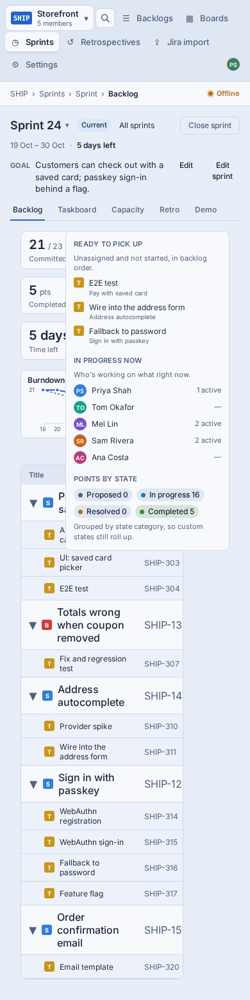
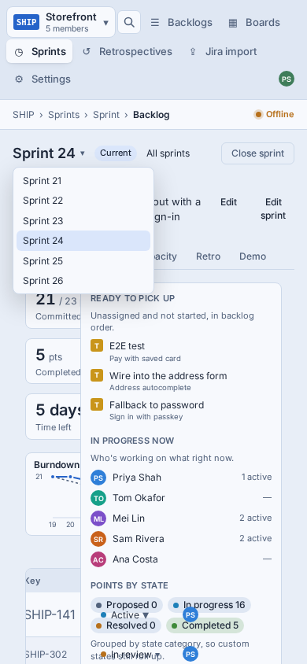
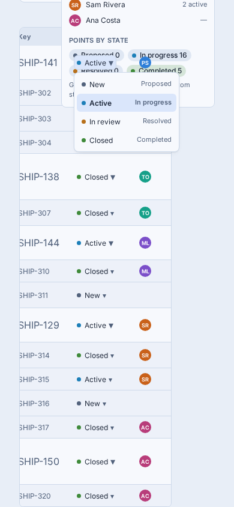
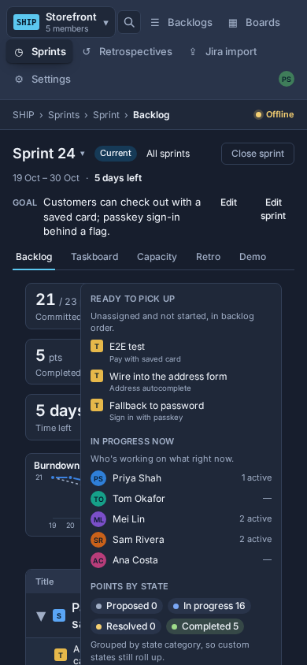

The Sprint backlog and the sprint header (picker, tabs, goal, Edit sprint, Close sprint) at 900px and below, drawn at 390 × 844. It sits inside the SHIP-713 touch shell and follows the shared rules on SHIP-805, which this page doesn't restate. The phones below are the live mock (design/mobile/sprint-backlog.html), so tap through them. The data is the page-shot fixture's Sprint 24, the same as the "today" shots.
The real app (this branch's SPA, page-shot fixtures, 390 × 844). The SHIP-713 drawer isn't built yet, so the old nav strip is still at the top.




Each phone is the mock in one state; numbers match the D-questions below. Everything scrolls with the page except the top bar.
Desktop stays as it is. Below 900px the same components render a different shape; nothing new on the server.
| Where | Today | At 900px and below | Size |
|---|---|---|---|
SprintHeader, SprintGoal | Picker · chip · All sprints · Close sprint on one row; goal with Edit and Edit sprint | Picker · Current · ⋯ (Edit goal, Edit sprint, All sprints, Close sprint). Goal clamps to two lines, tap to expand. Shared by every sprint tab (D10). | S |
SprintPicker | Popover listbox | The SHIP-713 Sheet: names, dates, status chip, a tick on the current one, All sprints at the foot (D6). Keeps the tab, as today. | S |
SprintTabs | Five links | The same links, 38px tall, scrolling sideways in their own box with the current one scrolled into view. | XS |
BacklogKpis, PointsByState | Four tiles; points as chips in the rail | One row of four compact tiles; Committed links to Capacity (replaces "edit"). Points by state becomes one bar with a legend (D7). | S |
Burndown | Fixed 232px SVG, hover titles | Full width; tap or drag to read a day (D8). | S |
SprintRail | Aside beside the table | Two glance rows above the list; each opens a Sheet (D1). In progress now lists each person's items (no hover). | S |
BacklogTable, StoryRow, TaskRow | Six-column table | Two-line rows: title, then key · state pill · tasks done; points and avatar on the right. Tasks indent under their story (D2, D4). | M |
RowStateMenu | Portal popover | A 28px pill (32px hit area) opening a States sheet; picking applies and closes (D3). Conflict notice becomes a toast (D11). | S |
SprintGoalEditor, EditSprintRail, Close sprint dialog | Inline editor; side rail; dialog | Goal edits in place with the SaveBar; Edit sprint full screen with the SaveBar; the Close sprint dialog full screen with its button at the bottom (D9). | S |
5 points holds if SHIP-713 ships Sheet, SaveBar and useTouchShell() first: this story only reshapes existing components. Without them it's 8.
No new events. With viewport on every web event (rule 16), compare work_item.updated state changes per sprint-backlog screen.viewed, phone against desktop, per week for the four weeks before and after release.